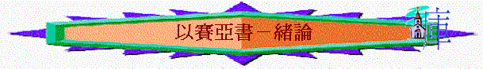

『當烏西雅、約坦、亞哈斯、希西家、作猶大王的時候、亞摩斯的兒子以賽亞得默示、論到猶大和
耶路撒冷，天哪，要聽，地阿，側耳而聽，因為耶和華說，我養育兒女，將他們養大，他們竟悖
逆我，牛認識主人，驢認識主人得的槽，以色列卻不認識，我的民卻不留意。』
（賽1:1-3）
1.作者的爭議
～作者是以賽亞：他是亞摩斯的兒子，是烏西雅王、希西家時代的先知
～新派神學家認為以賽亞書有2、3個作者，因他們所持的理由如下：
A.在賽40-66中所講的古列王、巴比倫擄以色列民跟本不在以賽亞所寫的年代發生，所以不可能是以賽亞所寫的
B.賽1-39，與50-66的筆調也不同，前者強調亞述，後者強調巴比倫
C.賽1-39，與40-66的神學文體也不同，前者是強調神的公義，後者強調神的憐憫，所以他們認為1-39與40-66章兩段分別由2個或以上不同作者所寫的
～但筆者反對此論調，他們有此看法完全否定聖經的真實性及有預言的發生，而且以賽亞書肯定是以賽亞所寫的理由如下：
A.其實1-39，與40-66也同時以巴比倫為主題，而且1-39出現「巴比倫」字眼比40-66還多
B.耶穌也分別證明1-39與40-66中的兩段經文是引自以賽亞寫的(約12:38-41)
C.猶大拉比及古教會史也肯定接納以賽亞書是以賽亞寫，也納為止典，對作者從沒有懷疑
D.在以賽亞書裏，也有很多相似文體，如18:5與59:3，7及10:1-2與59:4-9；「以色列的聖者」----這神的稱號及神學中心主題在以賽亞書出現了26次之多，而在1-39有12次，40-66章有14次，如二段分別由不同作者所寫，為何他們有如此對神特別稱呼的相似字眼
E.以賽亞與以賽亞書經歷的時代十分長，1年前所寫的東西與30年後所寫的，在文體上有不同也不希奇
F.更重要的，在死海古卷中的以賽亞書古卷中，發覺原來抄卷沒有分段，而在39章最後一節與40章開始之節完全連貫在一起，沒有斷開，也沒有在此註明由不同作者所寫，更足證明以賽亞書是由一位作者所寫的
～所以新派神學家所持的理由完全不充份，更否定了聖經真實性與預言發生可能性，事實上，以賽亞書由以賽亞所寫是不能推翻的事實。
2.先知的榜樣
A.全家的事奉
「使家宰以利亞敬和書記舍伯那，並祭司中的長老，都披上麻布，去見亞摩斯的兒子先知以賽亞，」王下19:2
「耶和華對以賽亞說：「你和你的兒子施亞雅述出去，到上池的水溝頭，在漂布地的大路上，去迎接亞哈斯，」賽7:3
「我以賽亞與妻子（原文作女先知）同室；他懷孕生子，耶和華就對我說：「給他起名叫瑪黑珥沙拉勒哈施罷斯；」賽8:3
～以賽亞是在南國烏西雅王年代，作猶大國的先知，他的妻子(原文作女先知)也是事奉神，而他至少有兩個兒子，兩個兒子在神的默示及使命中也有份參與，他一家也是神所用的見證人，是神所用的家庭
B.誠實的宣講
「耶穌說：「以賽亞指著你們假冒為善之人所說的預言是不錯的。如經上說：這百姓用嘴唇尊敬我，心卻遠離我。」可7:6
「那時希西家病得要死，亞摩斯的兒子先知以賽亞去見他，對他說：「耶和華如此說：你當留遺命與你的家，因為你必死不能活了。」」賽38:1
～以賽亞無論對當時假冒為善的以色列人及在上的君王，也勇敢誠實的宣講神的信息，不單是平安的信息，即使是拆毀審判性的信息，他也直言宣講
C.絕對的順服
「我以賽亞與妻子（原文作女先知）同室；他懷孕生子，耶和華就對我說：「給他起名叫瑪黑珥沙拉勒哈施罷斯；因為在這小孩子不曉得叫父叫母之先，大馬色的財寶和撒瑪利亞的擄物必在亞述王面前搬了去。」」賽8:3-4
「耶和華說：「我僕人以賽亞怎樣露身赤腳行走三年，作為關乎埃及和古實的預兆奇蹟。」賽20:3
～神要以賽亞將他的兒子改為人看為不好的名字，神也要他在人面前作奇異的動作，他也絕對順服神而作
D.長久的忠心
「當烏西雅、約坦、亞哈斯、希西家作猶大王的時候，亞摩斯的兒子以賽亞得默示，論到猶大和耶路撒冷。」賽1:1
～以賽亞事奉的年日由烏西雅至希西家年代，至少有四十多年，無論王朝怎樣變遷，他服事的世代如何悖逆，他仍然忠心的服事神
在古老的傳說中，以賽亞是死於惡毒的瑪拿西手上，有人甚至認為來11:37所暗示的鋸死是指以賽亞受此刑罰，若是真的話，他事奉到至死仍忠心！
D.一生的負擔
「看哪！神是我的拯救；我要倚靠他，並不懼怕。因為主耶和華是我的力量，是我的詩歌，他也成了我的拯救。」賽12:2
「那報佳音，傳平安，報好信，傳救恩的，對錫安說：你的神作王了！這人的腳登山何等佳美！」賽52:7
「耶和華在萬國眼前露出聖臂；地極的人都看見我們神的救恩了。」賽52:10
「我因耶和華大大歡喜；我的心靠神快樂。因他以拯救為衣給我穿上，以公義為袍給我披上，好像新郎戴上華冠，又像新婦佩戴妝飾。」賽61:10
「亞伯拉罕雖然不認識我們，以色列也不承認我們，你卻是我們的父。耶和華啊，你是我們的父；從萬古以來，你名稱為「我們的救贖主」。」賽63:16
～以賽亞本身的名字由兩個字<Yesha>，<Yahu>組成，意思耶和華的救恩，他背著這一生的名字，將神的救恩，神的拯救，以色列人的救贖主傳開，他也堅信神才是真正選民的拯救
二.對象：『論到猶大和耶路撒冷』
三.當時的背景----黑暗的年代
「禍哉！那些稱惡為善，稱善為惡，以暗為光，以光為暗，以苦為甜，以甜為苦的人。」5:20
「那日，他們要向以色列人吼叫，像海浪匉訇；人若望地，只見黑暗艱難，光明在雲中變為昏暗。」5:30
「仰觀上天，俯察下地，不料，盡是艱難、黑暗，和幽暗的痛苦。他們必被趕入烏黑的黑暗中去。」8:22
「對他說：「希西家如此說：『今日是急難、責罰、凌辱的日子，就如婦人將要生產嬰孩，卻沒有力量生產。」37:3
「看哪，黑暗遮蓋大地，幽暗遮蓋萬民，耶和華卻要顯現照耀你；他的榮耀要現在你身上。」60:2
～黑暗、無助、困難的氣氛充滿了全本書，他們當時的光景是：
1.選民的敗壞
A.不認識神
「牛認識主人，驢認識主人的槽，以色列卻不認識；我的民卻不留意。」1:3
「嗐！犯罪的國民，擔著罪孽的百姓；行惡的種類，敗壞的兒女！他們離棄耶和華，藐視以色列的聖者，與他生疏，往後退步。」1:4
「他說：「你去告訴這百姓說：你們聽是要聽見，卻不明白；看是要看見，卻不曉得。」6:9
「因你忘記救你的神，不記念你能力的磐石；所以，你栽上佳美的樹秧子，插上異樣的栽子。」17:10
「他們不知道，也不思想；因為耶和華閉住他們的眼，不能看見，塞住他們的心，不能明白。」44:18
「因我僕人雅各，我所揀選以色列的緣故，我就提名召你；你雖不認識我，我也加給你名號。」45:4
～選民竟然忘記選他們的主，不認識祂，不留意祂，甚至忘記，離棄神
B.敬拜偶像
「他們的地滿了偶像；他們跪拜自己手所造的，就是自己指頭所做的。」2:8
C.行惡悖逆
「嗐！犯罪的國民，擔著罪孽的百姓；行惡的種類，敗壞的兒女！他們離棄耶和華，藐視以色列的聖者，與他生疏，往後退步。」1:4
「你未曾聽見，未曾知道；你的耳朵從來未曾開通。我原知道你行事極其詭詐，你自從出胎以來，便稱為悖逆的。」48:8
「我們的過犯在你面前增多，罪惡作見證告我們；過犯與我們同在。至於我們的罪孽，我們都知道：」59:12
2.列強的威脅
A.外邦的威脅
a.亞述
「希西家王十四年，亞述王西拿基立上來攻擊猶大的一切堅固城，將城攻取。」36:1
b.亞蘭
「烏西雅的孫子、約坦的兒子、猶大王亞哈斯在位的時候，亞蘭王利汛和利瑪利的兒子、以色列王比加上來攻打耶路撒冷，卻不能攻取。」賽7:1
c.巴比倫的興起
「那時，巴比倫王巴拉但的兒子米羅達巴拉但聽見希西家病而痊愈，就送書信和禮物給他。」賽39:1
「日子必到，凡你家裡所有的，並你列祖積蓄到如今的，都要被擄到巴比倫去，不留下一樣；這是耶和華說的。」39:6
B.選民的懼怕
「對他說：『你要謹慎安靜，不要因亞蘭王利汛和利瑪利的兒子這兩個冒煙的火把頭所發的烈怒害怕，也不要心裡膽怯。」7:4
「對膽怯的人說：你們要剛強，不要懼怕。看哪，你們的神必來報仇，必來施行極大的報應；他必來拯救你們。」35:4
C.另外的尋求
a.尋求智慧人
「耶和華必擊打埃及，又擊打又醫治，埃及人就歸向耶和華。他必應允他們的禱告，醫治他們。」19:22
b.尋求外邦
「起身下埃及去，並沒有求問我；要靠法老的力量加添自己的力量，並投在埃及的蔭下。」30:2
c.尋求靈界
「有人對你們說：「當求問那些交鬼的和行巫術的，就是聲音綿蠻，言語微細的。」你們便回答說：「百姓不當求問自己的神嗎？豈可為活人求問死人呢？」」8:19
d.不尋求神
「這百姓還沒有歸向擊打他們的主，也沒有尋求萬軍之耶和華。」9:13
3.政局的不穩
A.君王的駕崩
「當烏西雅王崩的那年，我見主坐在高高的寶座上。他的衣裳垂下，遮滿聖殿。」6:1
B.北國的滅亡
「亞述王上來攻擊以色列遍地，上到撒瑪利亞，圍困三年。何細亞第九年亞述王攻取了撒瑪利亞，將以色列人擄到亞述，把他們安置在哈臘與歌散的哈博河邊，並瑪代人的城邑。」王下17:5-6
4.前景的迷惘
「雅各啊，你為何說，我的道路向耶和華隱藏？以色列啊，你為何言，我的冤屈神並不查問？」40:27
|
時
期 |
南國（猶大/耶路撒冷） |
北國（以法蓮/撒瑪利亞） |
外 邦 與 以 色 列 人 |
|
烏西雅作王 |
『烏西雅定意尋求神．．．．耶和華就使他亨通．．．．因他甚強盛』 （代下26） 『只是邱壇還沒有廢去，百姓仍在那裏燒香』 （王下15:4） |
『耶羅波安．．．．行耶和華眼中看為惡的事，不離開尼八的兒子．．．．使以色列人陷在罪裏的一切罪』 （王下14:24） 撒加利雅、米拿現、比加轄、比加等王都不離開尼八的兒子．．．． |
『亞述王普勒來攻擊以色列國，米拿現給他一千他連得銀子，請普勒幫助他堅定國位。』 （王下15:19） 『以色列王比加年間，亞述王．．．．來奪了．．．．全地，將這些地方的居民都擄到亞述去了。』 （王下15:29） |
|
約坦作王 |
『約坦行耶和華眼中看為正的事．．．．只是邱壇還沒有廢去．．．．』 （王下15:34-35） |
|
|
|
亞哈斯作王 |
『．．．．亞哈斯登基．．．．不像他祖大衛行耶和華眼中看為正的事，卻效法以色列諸王所行的，又照著．．．．外邦人所行可憎的事，使他的兒子經火，並在邱壇上．．．．獻祭燒香』 （王下16:1-4）『這亞哈斯王在急難的時候，越發得罪耶和華，他祭祀攻擊他的大馬色之神．．．．』 （代下28:22） |
『何細亞．．．．行耶和 華眼中看為惡的事．． ．．』 （王下17:1-2） |
『亞蘭王利汛和以色列王利瑪利的兒子比加上來攻打耶路撒冷，圍困亞哈斯．．．．亞哈斯差遣使者去見亞述王．．．．求你來救我脫離他 們的手。』 （王下16:5-7） 『亞述王．．．．上來攻擊何細亞，何細亞就服事他，給他進貢。何細亞背叛，差人去見埃及王梭，不照往年所行的，與亞述王進貢．．．．』 （王下17:3-4） |
|
希西家作王 |
『希西家行耶和華眼中看為正的事．．．．他廢去邱壇，毀壞柱像，砍下木偶，打碎摩西所造的銅蛇，因為那時以色列人仍向銅蛇燒香．．．．』 （王下18:1-4） |
北國滅亡，選民被擄 |
『亞述王上來攻擊以色列遍地．．．．何細亞第九年亞述王攻取了撒瑪利亞，將以色列人擄到亞述．．．．』（王下17:5-6）
『希西家王十四年，亞述王．．．．上來攻擊猶大的一切堅固城，將城攻取．．．．希西家就把耶和華殿裡和王宮府庫裡所有的銀子都給了他。』（王下18:13-15）
『拉伯沙基說．．．．亞述大王如此說，你所倚靠的有甚麼可仗賴的呢？．．．．
你竟倚靠埃及的戰車馬兵麼？』（王下18:19-25）
『當夜，耶和華的使者出去，在亞述營中殺了十八萬五千人．．．．』（王下19:35）
『那時巴比倫王巴拉但的兒子．．．．就送書信和禮物給他（希西家）』（王下20:12）
|
小結：北 國：趨向滅亡的事實，百姓被擄
南 國：較穩定，但不斷受外邦威脅，隨時有被擄危險，祈求外邦幫助
以色列人：不斷犯罪、拜偶像
外 邦 人：主要四個邦國-亞述、亞蘭、埃及、巴比倫
＊在轉變時代中，南國以色列人面對的問題是甚麼？他們最需要又是甚麼？
四.先知的任務
「．．．．以賽亞得默示，論到猶大和耶路撒冷。天哪，要聽，地阿，側耳而聽，因為耶和華說．．．」（賽1:1-2）
「耶和華對我說，你取一個大牌，拿人所用的筆，寫上．．．．」（賽8:1）
「耶和華的話臨到以賽亞說，你去告訴希西家說．．．．」（賽38:4）
「報好信息給錫安的啊，你要登高山；報好信息給耶路撒冷的啊，你要極力揚聲。揚聲不要懼怕，對猶大的城邑說：看哪，你們的神！」40:9
～先知在黑暗時代中，要用言語、行動傳遞耶和華的信息在任何時代中，將從神而得來的信息傳開
五.本書的內容與結構
|
章 節 |
年 期 |
背 景 |
問 題 |
重 要 經 文 |
內 容 |
主 題 |
真 理 重 點 |
|
1-5 |
烏西雅、約旦、亞哈斯、希西家作王 |
南國尚算穩定，仍有國民，仍有城土，仍有宗教活動 |
內在卻是變質退步！充滿敗壞！ |
1:21-22 |
1.指出、斥責
猶大的敗壞 2.預言神的審
判及神的更新 |
在變質國度中的斥責 |
1.神知道人內裏的光景 2.神可以扭轉 3.人需要自潔 |
|
6 |
烏西雅王崩的那年 |
烏西雅曾作王五十二年，國中興盛 |
一個曾經令猶大國強盛的王死了！ |
6:1 |
1.以賽亞見到異象 2.以賽亞被召 |
在君亡噩訊中的異象 |
1.神仍坐在寶座中 2.人肯為主作工的原因 |
|
7-12 |
亞哈斯在位的時候 |
亞蘭王與北國同盟攻打南國 |
1.孤立無援 2.倚靠亞述 |
8:10 |
1.指出神同在的應許 2.言有一嬰孩 為我們而生 |
在無助孤身中的應許 |
1.神仍同在 2.人單倚靠祂 |
|
13-25 |
亞哈斯王崩的那年 |
1.戰爭的氣氛
濃厚，亞述 大軍成為各國的威脅 2.非利士人欲與猶大國聯合對抗亞述 3.埃及也想與
其他國對抗亞述 4.北國倚靠亞蘭 |
1.各國極其驕傲 2.人的保障不是神，而是仰望其他東西 3.整個世界充
滿罪惡 |
20:6 34:1-2 |
1.指出列國的
命運、終局 2.一切保障皆 虛空 3.犯罪的列國
要受審判 |
在爭戰世界中的預言 |
1.真正的保障
在乎神 2.神掌管列國
的命運 3.神會審判世
界的罪惡 |
|
36-39 |
希西家作王二十年 |
亞述大軍正想入侵耶路撒冷 |
1.選民感到懼怕、驚恐 |
37:16 |
1.記載亞述入
侵耶路撒冷 的經過及失 敗歷史 2.也引出巴比
倫王朝的來 臨 |
在急難困境中的經歷 |
1.經歷神是萬
軍的耶和 華，是天下 萬國的神 |
|
40-66 |
希西家在位，巴比倫漸興起時期? |
1.北國已滅 2.一批選民被 擄 |
1.南國又如何？ 2.懷疑神！ |
40:1 45:21-25 |
1.說出安慰的 信息 2.說明神的無 可比 3.預言救主的 來臨 4.指出將來神
的賞賜與審判 5.預言將來榮
耀復興的國度 |
在前景暗淡中的安慰 |
真正的安慰在乎認識耶和華是我們的神，我們的救主，我們賞善罰惡公義的主宰 |
六.本書的中心（1：2-3）
【在黑暗時代中的信息】-要認識我們的救主
～本書很多「認識」、「曉得」、「看哪」、「知道」等字眼，目的是要在黑暗的時代中，要以色列民及世人知道神是誰！神才是以色列獨一大能的真神
1.叫以色列知道
A.祂是創造主
「你們豈不曾知道嗎？你們豈不曾聽見嗎？從起初豈沒有人告訴你們嗎？自從立地的根基，你們豈沒有明白嗎？」40:21
B.祂是掌管今天明天的神
「要說明後來的事，好叫我們知道你們是神。你們或降福，或降禍，使我們驚奇，一同觀看。」41:23
C.祂是以色列的救主
「並且我必使那欺壓你的吃自己的肉，也要以自己的血喝醉，好像喝甜酒一樣。凡有血氣的必都知道我耶和華是你的救主，是你的救贖主，是雅各的大能者。」49:26
D.祂是獨一的神
「你們不要恐懼，也不要害怕。我豈不是從上古就說明指示你們嗎？並且你們是我的見證！除我以外，豈有真神嗎？誠然沒有磐石，我不知道一個！」44:8
E.祂是真正的倚靠
「看哪！神是我的拯救；我要倚靠他，並不懼怕。因為主耶和華是我的力量，是我的詩歌，他也成了我的拯救。」12:2
「所以，主耶和華如此說：看哪，我在錫安放一塊石頭作為根基，是試驗過的石頭，是穩固根基，寶貴的房角石；信靠的人必不著急。」28:16
F.祂是會報仇的
「對膽怯的人說：你們要剛強，不要懼怕。看哪，你們的神必來報仇，必來施行極大的報應；他必來拯救你們。」35:4
G.祂是以色列的神
「到那日，人必說：「看哪，這是我們的神；我們素來等候他，他必拯救我們。這是耶和華，我們素來等候他，我們必因他的救恩歡喜快樂。」」25:9
「報好信息給錫安的啊，你要登高山；報好信息給耶路撒冷的啊，你要極力揚聲。揚聲不要懼怕，對猶大的城邑說：看哪，你們的神！」40:9
2.叫列國知道
A.神的大能
「你們遠方的人當聽我所行的；你們近處的人當承認我的大能。」33:13
B.祂是耶和華
「耶和華我們的神啊，現在求你救我們脫離亞述王的手，使天下萬國都知道惟有你是耶和華。」」37:20
C.祂會發怒
「看哪，耶和華的名從遠方來，怒氣燒起，密煙上騰。他的嘴唇滿有忿恨；他的舌頭像吞滅的火。」30:27
七.大網
|
在 黑 暗 時 代
中 的 信 息（1-66） |
|||||
|
在變質國度中的斥責 |
在君亡噩訊中的異象 |
在無助孤身中的應許 |
在爭戰世界中的預言 |
在危難困境中的經歷 |
在暗淡前景 中的安慰 |
|
1-5 |
6 |
7-12 |
13-35 |
36-39 |
40-66 |
|
亞 述 時 代 |
過 渡 時 代 |
巴比倫興起時代 |
|||
八.讀經注意事項
1.留意主角與對像：『我』『你』『他』指誰？
2.留意預言的中心
A.單向的預言
B.重疊的預言
3.留意歷史的背景（參考王下及代下）
4.留意列國的地理
九.以賽亞書的基督
1.基督的誕生（11:1；7:4）
2.基督的名稱（4:2；7:14；9:6；42:1；32:1）
3.基督的先鋒（40:3-11）
4.基督的受膏（42；1；61:1-3）
5.基督的德性（11；2、4、5；42:3、4、6；53:7、9、10、12）
6.基督的事工（35:5-6；55:1；61:1-2）
7.基督的榮辱（52-53）
8.基督的永約（55:3）
9.基督的再來（63:1-6）
10.基督的管治（11:3-5）